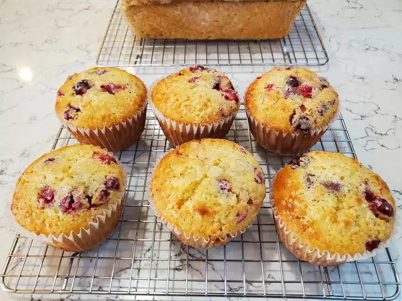

Mashed Potatoes

Description
Leftover cranberry sauce is obviously great on turkey sandwiches, and it's
even delicious warmed up and spooned over ice cream or pancakes, but have
you tried it in muffins? This easy recipe for cranberry muffins uses a cup
of your smooth or chunky leftover cranberry sauce. The batter comes
together in minutes and the moist, sweet muffins are perfect for a
post-Thanksgiving breakfast or snack.
Ingredients
- 2 cups all-purpose flour
- ½ cup packed brown sugar
- ¼ cup white sugar
- 1 tablespoon baking powder
- ½ teaspoon ground cinnamon
- ½ teaspoon salt
- 1 cup leftover cranberry sauce
- ¾ cup milk
- ¼ cup vegetable oil
- 1 large egg, slightly beaten
- 1 teaspoon vanilla extract
Steps:
- Gather all ingredients.
-
Preheat the oven to 400 degrees F (200 degrees C). Line 18 muffin cups
with paper liners.
-
Beat cranberry sauce, milk, oil, egg, and vanilla together in a bowl
until well combined.
-
Whisk flour, brown sugar, white sugar, baking powder, cinnamon,
cardamom, and salt together in a separate bowl.
-
Stir dry ingredients into wet ingredients until batter is just
moistened.
- Pour into the prepared muffin cups.
- Bake in the preheated oven until golden brown, about 20 minutes.
- Serve and enjoy!